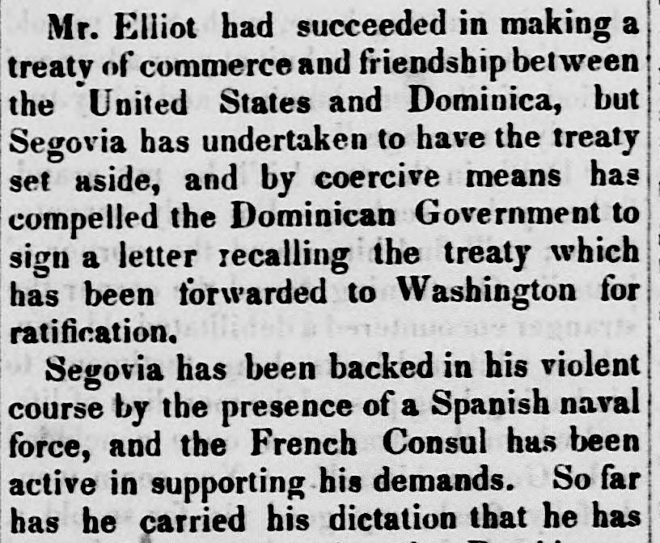
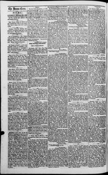

See the full pageVer la página completaSo far has he ?arried his dictation that he has forcedTan lejos ha llevado su imposición que ha forzado
The Houma Ceres reported that Spanish agent Segovia, backed by Spanish naval vessels and French diplomatic support, forced the Dominican government to recall a treaty pending in Washington. Segovia compelled President Santana to resign in favor of Buenaventura Báez and replaced pro-American cabinet members with his own allies. The report warned that Segovia was registering Dominicans as Spanish subjects to bring the entire island under Spanish rule and exclude American influence.El Houma Ceres informó que el agente español Segovia, respaldado por buques de guerra hispanos y el concurso diplomático francés, forzó al gobierno dominicano a retirar un tratado pendiente de ratificación en Washington. Segovia conminó al presidente Santana a dimitir en favor de Buenaventura Báez y sustituyó a los secretarios proclives a Estados Unidos por adictos a su causa. La noticia alertaba de que Segovia matriculaba a ciudadanos dominicanos como súbditos de la corona española con la mira de reincorporar toda la isla a la dominación de España y proscribir el predicamento norteamericano.
FULL TEXT:TRADUCCIÓN:
Mr. Elliot had succeeded in making a treaty of commerce and friendship between the United States and Dominica, but Segovia has undertaken to have the treaty set aside, and by coercive means has compelled the Dominican Government to sign a letter recalling the treaty which has been forwarded to Washington for ratification.El Sr. Elliot había logrado hacer un tratado de comercio y amistad entre los Estados Unidos y Dominica, pero Segovia ha emprendido que el tratado sea dejado de lado, y por medios coercitivos ha obligado al Gobierno Dominicano a firmar una carta revocando el tratado que ha sido remitido a Washington para ratificación.
Segovia has been backed in his violent course by the presence of a Spanish naval force, and the French Consul has been active in supporting his demands. So far has he carried his dictation that he hasSegovia ha sido respaldado en su curso violento por la presencia de una fuerza naval española, y el Cónsul francés ha estado activo en apoyar sus demandas. Tan lejos ha llevado su dictación que ha
Houma Ceres. Houma, Parish of Terrebonne, La., September 20, 1856.
See the original at the Library of CongressVer el original en la Biblioteca del Congreso
Published by: E.W. Blake & Co.Publicado por: E.W. Blake & Co.
Edition: Edition 1Edición: edición 1
Page: 2Página: 2
Frequency: weeklyFrecuencia: semanal
Collection: Chronicling America, Library of CongressColección: Chronicling America, de la Biblioteca del Congreso
LCCN: sn83026391LCCN: sn83026391
ISSN: 2332-5380ISSN: 2332-5380
OCLC: 9973417OCLC: 9973417
Rights: public domain, according to the Library of CongressDerechos: dominio público, según la Biblioteca del Congreso